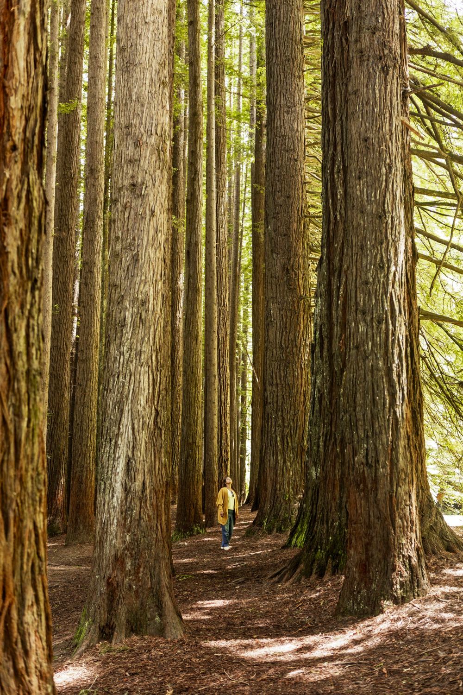
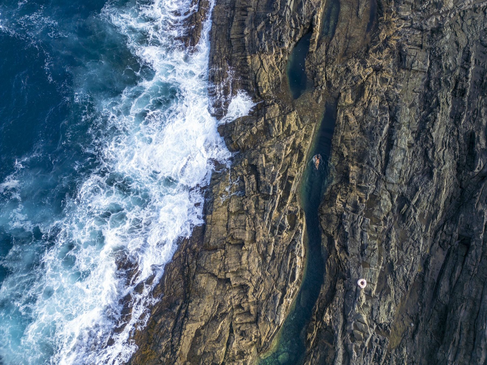
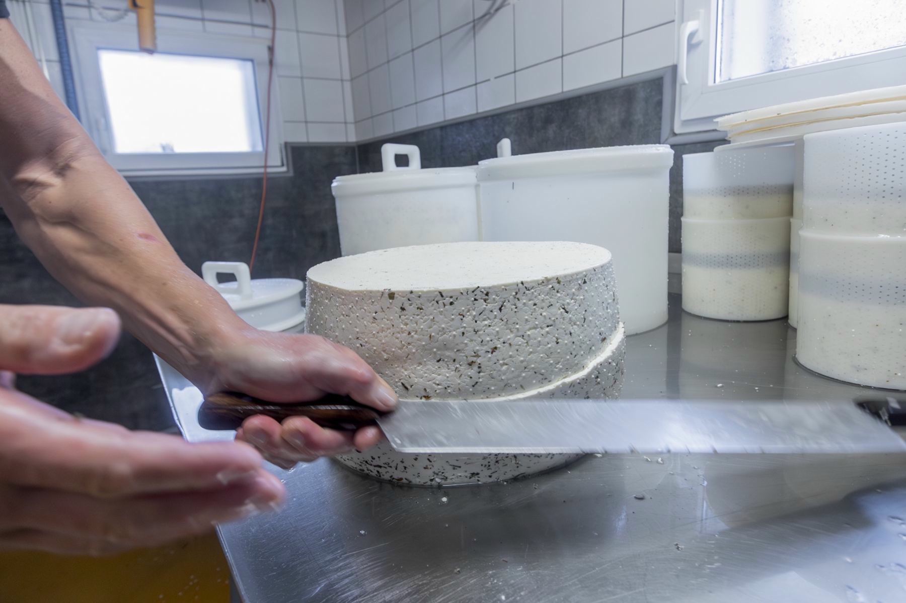
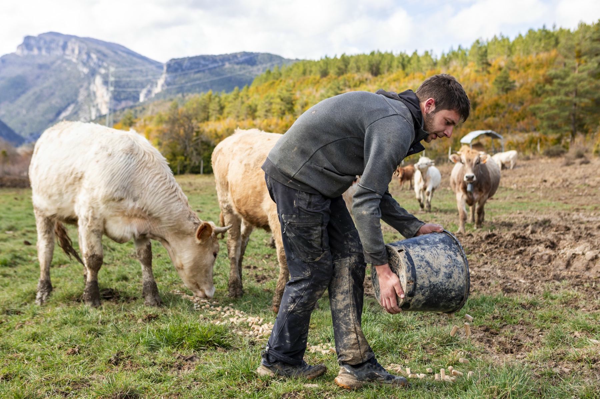
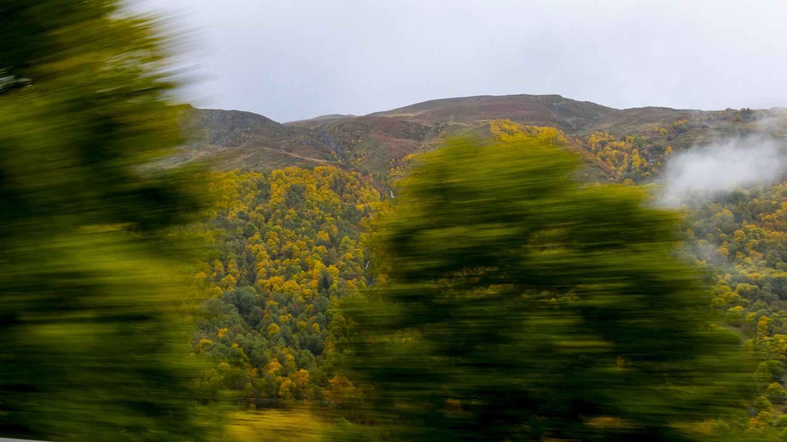

Imágenes para
vuestra campaña
Fotografía y vídeo originales para que vuestro equipo o agencia los incorpore a su comunicación, web, medios y campañas.

UNA PROPUESTA PARA ASTURIAS · FITUR 2027
Fotografía y vídeo para contar Asturias desde su paisaje, sus sabores y las personas que mantienen vivo el territorio.
DESCUBRIR LA PROPUESTA ↘Crear una mirada visual nueva para dar a conocer una Asturias cercana, viva y respetuosa con su entorno.
Propongo una producción de fotografía y vídeo desarrollada con vuestro equipo y colaboradores locales. Desde la costa y los bosques hasta las personas que elaboran, cultivan y reciben a quienes visitan el territorio.
Las fotografías de esta propuesta pertenecen a mi archivo y muestran el estilo de trabajo. La producción para Asturias se crearía sobre el terreno.

UNA MIRADA PARA EL DESTINO
Contar la belleza del paisaje junto a las personas que lo cuidan. Crear imágenes que inviten a descubrir el territorio con atención, a disfrutar de sus pueblos y a conocer los oficios que les dan vida.
VER LAS HISTORIAS ↘Ideas abiertas para adaptar a vuestros destinos, mercados y campañas.
Recorridos que unan paisajes, pueblos y experiencias, creando imágenes para mostrar cómo conocer el territorio con respeto.
Seguir el producto desde su origen hasta la mesa: los productores, sus oficios y la experiencia gastronómica vinculada al paisaje.
Retratos e historias desarrolladas junto a productores, guías y anfitriones que conocen cada lugar.
Producir en distintas estaciones para dar continuidad a la comunicación del destino y descubrir experiencias en diferentes momentos.


Dos formas de trabajar, según lo que necesite vuestro equipo.
Las localizaciones, los formatos, los tiempos y los usos se definen conjuntamente. Juan conserva la autoría y la propiedad del material.

CERCA PARA VOLVER
Mi base en Bilbao facilita organizar visitas y desarrollar la producción durante el tiempo que necesite cada proyecto.
Soy fotógrafo y realizador con base en Bilbao. Trabajo con un equipo profesional en proyectos de viajes, naturaleza, deporte y gastronomía, adaptando cada producción a las necesidades del cliente y a las historias del lugar.
VER MI TRABAJO ↗ENCUENTRO EN FITUR 2027
Me gustaría conocer vuestras prioridades y explorar cómo podemos crear imágenes para Asturias.
HABLEMOS DEL PROYECTO ↗aizpurumedia.com ↗